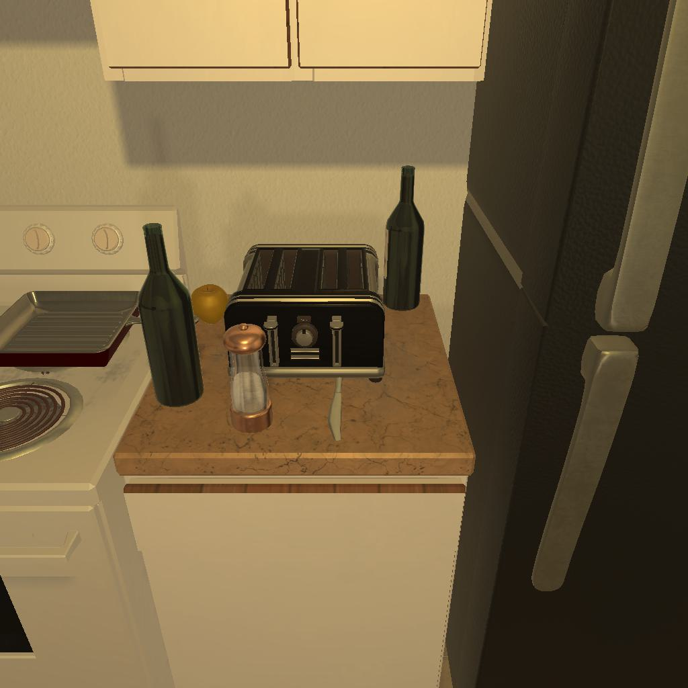

---------------------------------------------------------task: 14---------------------------------------------------------
--------------------------------------------------------------------------------------------------------------------------------------------------------------------
--------------------------------------------------------------------------------------------------------------------------------------------------------------------
Step:--------------------------------------------------------------------------13-------------------------------------------------------------------------------
----------------------------------------
VLM Prompt:
Image1:
**Instruction**
1. Analyze the provided image to identify all visible household objects, focusing on those relevant to the task description "cool some apple and put it in countertop."
2. Use the analysis of the image and the task hint "The agent must find an object of the desired type, pick it up, go to a fridge, cool the object with the fridge, then find the correct location to place it, and put it down there. The agent does not need to use the fridge button or open the fridge to cool the object, and the agent just needs to do action that is "cool the object with the fridge"." to answer the question: what is the most reasonable action in the choices for the task description "cool some apple and put it in countertop"?
4. Decide and write the answer using the template: The answer is: (i): , where i is the real number. If there is no desired object in the image, search every place based on **Initial Observation** to find the object. And if no one is exactly correct, choose a similar answer.
**Initial Observation**
You are in the middle of a room. Looking quickly around you, you can see microwave (1), countertop (1-2), cabinet (1-11), diningtable (1), drawer (1-3), sink (1), sinkbasin (1), toaster (1), stoveburner (1-4), fridge (1), coffeemachine (1), garbagecan (1)
**Answer Choices**
(1): go to microwave 1
(2): go to countertop 1
(3): go to diningtable 1
(4): go to drawer 1
(5): go to sink 1
(6): go to cabinet 2
(7): go to cabinet 3
(8): go to sinkbasin 1
(9): go to cabinet 4
(10): go to cabinet 5
(11): go to drawer 2
(12): go to toaster 1
(13): go to cabinet 6
(14): go to stoveburner 1
(15): go to cabinet 7
(16): go to stoveburner 2
(17): go to stoveburner 3
(18): go to stoveburner 4
(19): go to drawer 3
(20): go to cabinet 8
(21): go to cabinet 9
(22): go to cabinet 10
(23): go to coffeemachine 1
(24): go to cabinet 11
(25): go to garbagecan 1
(26): take pan 1 from countertop 2
(27): take winebottle 2 from countertop 2
(28): take winebottle 1 from countertop 2
(29): take saltshaker 2 from countertop 2
(30): take apple 1 from countertop 2
(31): take stoveknob 1 from countertop 2
(32): take stoveknob 2 from countertop 2
(33): take butterknife 1 from countertop 2
(34): examine countertop 2
**Answer**
Let's think step by step by following the instructions.
----------------------------------------
----------------------------------------
Original Response:
First, we need to identify all visible household objects related to the task "cool some apple and put it in countertop." From the image provided, we can see a countertop, wine bottles, a toaster, a salt shaker, a fridge, and other objects on the countertop that are not clearly identifiable as apples.
Based on the initial observation, we are in a room with several household objects, including a fridge, which is relevant to our task of cooling an apple. Since we cannot see an apple in the image, we must search other places to find one.
The task hint indicates that we do not need to use the fridge button or open the fridge to cool the object, and we just need to perform an action that is "cool the object with the fridge."
Considering all these points, it seems the most reasonable action in the choices provided would be to first find an apple. Since we cannot see one on the countertop, we should check the cabinets or drawers where an apple might be stored.
From the answer choices given, we do not have an option to look inside the fridge, where one would typically cool an apple. However, we do have options to check various cabinets and drawers.
The most logical choice would be to check the cabinets closest to the fridge and countertop, as those would be the most likely places to store an apple for easy access. Therefore, we should choose an action that involves searching in a cabinet.
Based on the initial observation, we have multiple cabinets numbered 1 to 11.
Since no exact choice seems to involve checking inside the fridge or taking an apple directly, we should choose to search in a cabinet that is near the fridge and countertop. The cabinets are numbered, but without knowing their exact position relative to the fridge, we should choose a cabinet that seems reasonable to check for an apple.
The answer is: (24): go to cabinet 11
----------------------------------------
----------------------------------------
>>> Refine Original VLM Response and Get Pure Action: go to cabinet 11
----------------------------------------
-----------------------------------------------------------------
Running time: 18.095871448516846 seconds
Total Money: 4.52058
-----------------------------------------------------------------
-----------------------------------------------------------------
Text Observation:You arrive at loc 26. The cabinet 11 is closed.
-----------------------------------------------------------------
UNSUCCEED